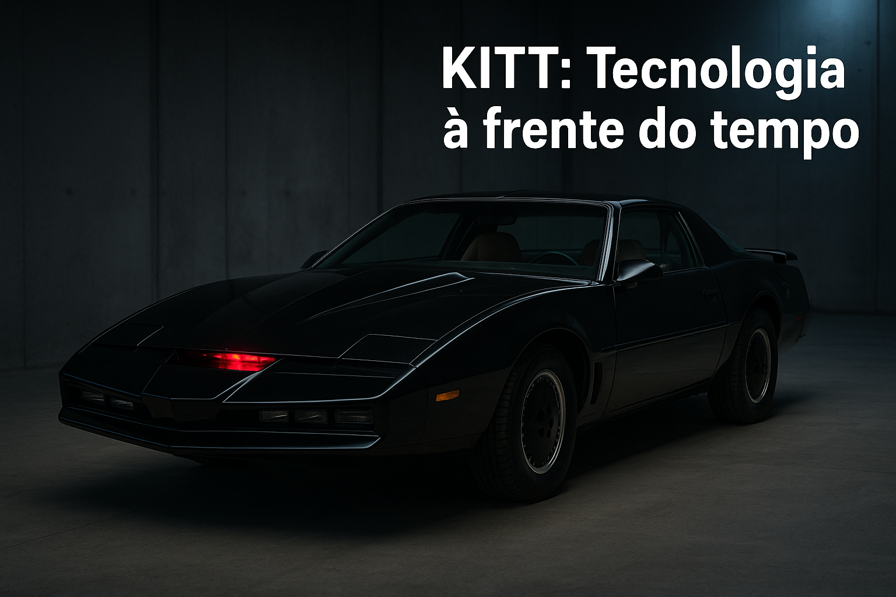
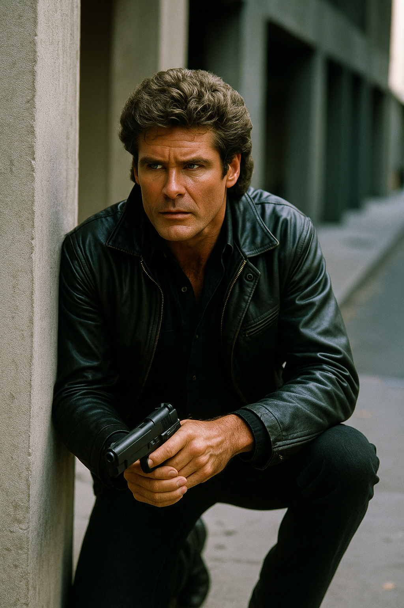
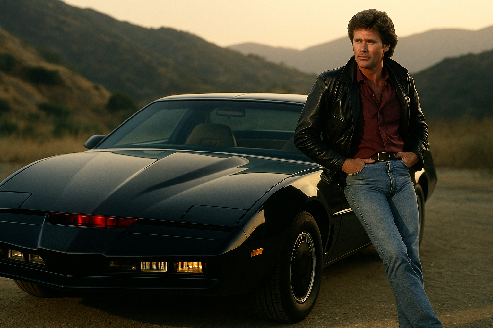

Ação sobre rodas com K.I.T.T.
David Hasselhoff vive Michael Knight, um ex-policial com nova identidade que combate o crime com seu parceiro inusitado: um carro inteligente chamado KITT.

KITT: Tecnologia à frente do tempo

Michael Knight e sua missão secreta

Clássico da TV com muita ação
Exibida de 1982 a 1986, "A Supermáquina" teve 4 temporadas e 90 episódios. Um marco da ficção tecnológica, a série deixou saudades e rendeu até filmes e um reboot.